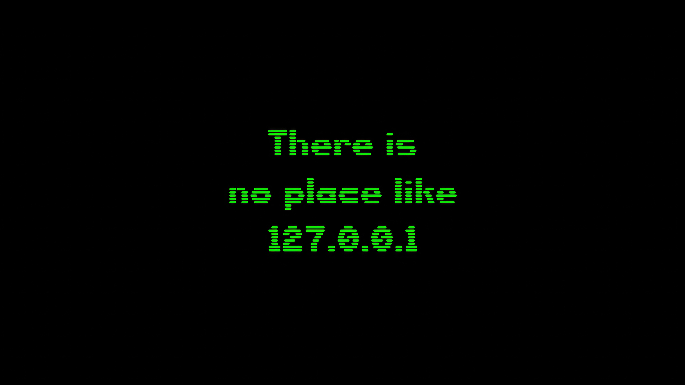

"Paulo é um profissional dedicado e apaixonado por tecnologia. Ele demonstra grande capacidade de aprendizagem e adaptação a novas ferramentas e linguagens de programação."
— Fidel da Luz, Mentor na NOSi Akademia

Futuro programador web, a aprender a construir sites de raiz.
Sou apaixonado por tecnologia e desenvolvimento de software, com formação em Engenharia Informática.
Tenho procurado desenvolver as minhas competências na área da programação, através de projetos práticos, formação e experiências profissionais.
Em 2026 decidi mudar de vida e aprofundar mais em programação: quero ser programador full-stack.
Formação na área das tecnologias de informação, com conhecimentos de programação, desenvolvimento de sistemas e bases de dados.
Experiência de estágio na NOSi, na equipa Government Applications Innovations (GAI), com foco no desenvolvimento frontend, Design System e melhoria de componentes.
Formações realizadas através da IBM, incluindo Fundamentos da IA e Desenvolvimento Web.
Experiência prática com tecnologias como HTML, CSS, JavaScript, React, Next.js e TypeScript, desenvolvendo aplicações web e explorando novas ferramentas tecnológicas.
Desde 2026: HTML, CSS, JS e muito mais. Ainda agora comecei!
"Paulo é um profissional dedicado e apaixonado por tecnologia. Ele demonstra grande capacidade de aprendizagem e adaptação a novas ferramentas e linguagens de programação."
— Fidel da Luz, Mentor na NOSi Akademia
E-mail: pl65872@gmail.com
GitHub: LuisSDK
Disponível para estágio a partir de 2027.